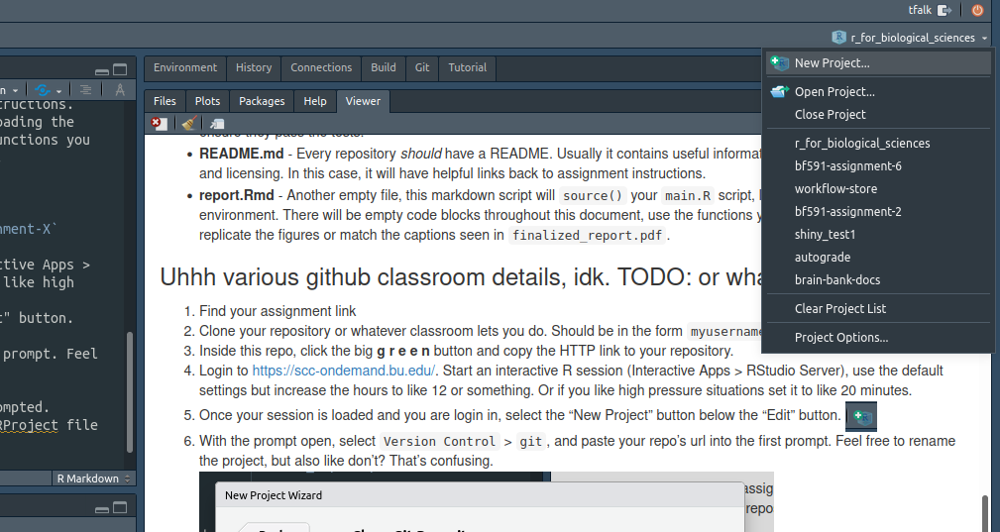
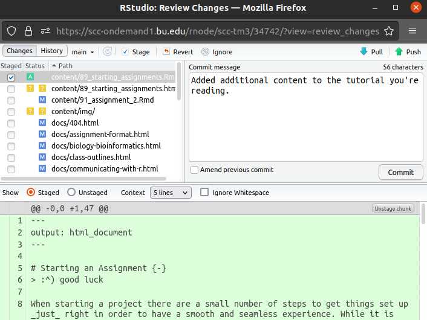

Assignments
Starting an Assignment
:^) good luck
When starting a project there are a small number of steps to get things set up just right in order to have a smooth and seamless experience. While it is absolutely possible to complete these projects on your own machine and your own installation of R and RStudio, it will be easier and faster to do your work on BU’s SCC. The experience will be more straightforward and basically identical to doing it on your own.
Starting your own git repository and cloning it
In our development of these assignments we used git and github.com to manage our updates and allow for easy sharing. We can now pass these repositories (repos) along to you using GitHub classroom so you can follow the steps within.
Contents
Each assignment will have these following files within, roughly:
├── reference_report.html
├── main.R
├── README.md
├── report.Rmd
└── test_main.R- reference_report.html - This is the completed “report” of the assignment. You will be endeavoring to replicate this while completing the assignment, with some room for creative differences in elements like plotting.
- main.R - This is the main R script in the assignment, where you will be doing a lot of your programming. This script contains function definitions and descriptions, but with functions that are empty. Complete the functions as described in the script and ensure they pass the tests.
- README.md - Every repository should have a README. Usually it contains useful information about installation, usage, and licensing. In this case, it will have helpful links back to assignment instructions.
-
report.Rmd - Another empty file, this markdown script will
source()yourmain.Rscript, loading the functions into its environment. There will be empty code blocks throughout this document, use the functions you developed inmain.Rto replicate the figures or match the captions seen infinalized_report.pdf. -
test_main.R - This is a completed testing script produced by us to help you quickly determine how will your code is running. This file sources your
main.Rfile, meaning it runs it to completion and stores any functions and variables in the active environment. It then runs tests to ensure your functions are working in a predictable way. Tests are incredibly valuable tools, and potentially one of the strongest in a programmer’s toolkit.
Most assignments beyond assignment 1 have a complementary guide hosted on the website page. These go into more background about how functions and tests work so use them if you’re feeling stuck or would like more context. https://bu-bioinfo.github.io/r_for_biological_sciences/assignment-format.html
GitHub tutorial
- Find your assignment link
- Clone your repository, you will see a new repo in the form:
myusername/assignment-X - Inside this repo, click the big g r e e n button and copy the HTTP link to your repository.
- Login to https://scc-ondemand.bu.edu/. Start an interactive R session (Interactive Apps > RStudio Server), use the default settings but increase the hours to like 12 or something. Or if you like high pressure situations set it to like 20 minutes.
- Once your session is loaded and you are login in, select the “New Project” button below the “Edit” button.

- With the prompt open, select
Version Control>git, and paste your repo’s url into the first prompt. Feel free to rename the project, but also like don’t? That’s confusing. You can change where this folder is setup on SCC, but I find~/Documentsor~/Documents/BF591to be a good home for organizing my various projects.
- You will need to login to complete this process, enter your GitHub username and password when prompted.
- R will download all of the repository contents, and add an
.RProjfile to the directory. This RProject file is useful for switching between R assignments in RStudio. This context menu is in the top right of the RStudio interface:

Committing and Pushing with R (and without)
With the RProject set up, you now have a directory on SCC that has cloned your remote repository in GitHub. At this moment all of the files are the same, since you have made no progress on your assignment (depressing, I know). In a burst of productive energy, you will start to make changes to main.R and write your beautiful, buggy functions. Once you’re done for a little bit, what next? You could leave it on SCC and it would probably be pretty safe, but what if you want to share this code easily? Or if a cataclysm strikes Western Massachusetts? Your changes are gone and life will have lost all meaning.
To prevent this cataclysm, you must add, commit, and push your code back to GitHub.
Using RStudio
- Save the files you want to commit, and select the Git tab in the top right viewer (by default).

- You’ll notice the files you changed are listed here, along with varying symbols. A question mark ? means the file is untracked, an M means a tracked file has been modified. A D means a tracked file has been deleted. If I select a file I want to add back to GitHub, I can tick the checkbox and it will switch to the left column. This is called staging a file.

- Once I’ve staged all the files I want to add, I can click on the Commit button. This brings up another window, which will again list the files you are staging and actually show you the differences you’re making (this is called the diff, based on the GNU utility of the same name). The most important part is the Commit box. A commit is a series of file updates made together, typically to solve a task. It is paramount that you include commit messages, so you can track what it is you’re doing with your work! Just a sentence is usually enough to describe what the changes in this commit are doing. 
- Once you’ve pressed the commit button, all that’s left to do is to push your commit. This sends the commit to GitHub where it can safely live forever, duplicated across the world and safe from most cataclysms.

- In the same vein, the pull button is useful if your GitHub has been updated more recently than your current SCC directory. This can happen if you’re editing these files from another computer or on GitHub.com directly.
Using the command line
That was kind of a lot of clicking and funny little menus, and my doctor says I am at high risk for a repetitive stress injury, so can’t I just use my keyboard instead? Yes, of course. We’ll use the terminal, which is also built-in to RStudio but really just emulates the standard bash terminal that you would use to interact with SCC normally.
- Click on the terminal tab at the bottom of your layout (default).

- Marvel at the wonderful monospace font and rest your hands upon the keyboard. To see how the directory is doing, we can type
git statusto see what files have been changed. Wow! Looks like I have a lot of stuff to deal with. What’s nice is thegitcommand offers a lot of helpful tips for getting me on my way.
- I want to add these files, and I really don’t care how many I had so I am going to use
git add *, which basically adds everything that can be found in the current directory. If I only wanted one or two things, I could specifygit add file1.txt file2.txtand leave the other files alone. - Once I have added (or removed
git rm file1.txt) the files I want to commit, I simply usegit commit -m "Added a lot more content to tutorials!to create the commit and add my very important message. Messages are not mandatory but if you slack on being descriptive you will regret it when you come back later to figure out what in God’s name you were doing that day. - Finally, with my commit done and files added, I simply say
git pushto send my wonderful code back to GitHub, and I can sit back and marvel at my handiwork.
Put simply, the three commands git add *, git commit -m "message", and git push will save the changes to your code and keep your repository up to date. Easier than clicking around RStudio but both ways are super valid!
Assignment 1
Problem Statement
This assignment will focus on basic functions of R with an emphasis on
tidyverse implementations. tidyverse is a collection of packages, pioneered
by Hadley Wickham and RStudio, that looks to standardize procedures,
functionality, and syntax in R.
To gain familiarity with R, we will be working with a microarray dataset that contains gene probe expression data for various samples collected from cancer patients. In bioinformatics, it is common to have multiple datasets for your different modes of data (i.e. microarray expression data is kept separate from clinical data detailing the samples). You will get an opportunity to work with both of these datasets, and be required to cross reference between the two.
Learning Objectives and Skill List
- Install various packages needed for analysis
- Load Data
- Gain familiarity with common
tidyverseoperations such asgroupby(),mutate, andsummarize. - Create a small plot to display results
- Utilize R Markdown to create an attractive format for sharing data.
Instructions
Our main focus for this assignment are installing packages, manipulating data, and summarizing important statistics across both samples and features (genes). An empty project repo can be found here:
https://github.com/bu-bioinfo/bf591-assignment-1
The project is laid out as such:
main.R
report.Rmd
reference_report.htmlEach step of the assignment is explained in the R markdown file, report.Rmd.
There you will find a list of tasks to explicity implement functions in your
empty main.R script. The main.R script contains skeletons of each function
you’ll need to implement, explaining what each function should do, the parameters
it expects to receive, and what type of output is expected to be returned. A
reference report, reference_report.html is also provided. Assuming you successfully
implement all the functions in main.R, your generated report should look
identical to the information displayed in reference_report.html. In this way,
you can use reference_report.html as a guide to determine if you are correctly
implementing your functions.
Here is the suggested workflow for developing and checking your code in this assignment:
-
main.Rcontains function definitions, including signature descriptions, for a number of functions, but the bodies of those functions are currently blank -
report.Rmdhas code chunks that call functions defined inmain.R- you do not need to write anything in the Rmd file (but you may) - Your task is to read the function descriptions and the text in the Rmarkdown document and fill in the function bodies to produce the desired behavior in main.R
- You can test your work by executing individual code chunks in report.Rmd and comparing your output to the example compiled report in the repo
- In the workflow, you will go back and forth between developing code in main.R and running code chunks in report.Rmd
- When you have developed function bodies for all the functions and executed all the code chunks in the report successfully, you should be able to knit the entire report
Hints
- When developing the
period_to_underscore()function, you might find thestringr::str_replace_all()function helpful. Thepatternargument to these functions is interpreted as a regular expression or “regex” for short. A regular expression is a sequence of characters (i.e. a string) written in a language that describes patterns in text, similar to “Find and Replace” operations in word processing software, but is more powerful and flexible in the kinds of patterns it can detect. Some characters have special meaning in regular expressions, one of which is the.character. In order to identify the literal period character like we are trying to do, we must instruct the regular expression to do so by either escaping the character with\\.or place it in a range with[.]. Either of these two methods will work to replace a literal.with_. See the section on Regular expressions for more information. - If you are getting type conversion errors when loading in your expression CSV file, check to make sure you aren’t supplying your own column names. The CSV file has column headers already, and supplying your own will cause the first line to be read in as data. Since the first row are character values in this case, all of the other values in the columns will be coerced to characters as well, instead of reading them in as numbers.
Assignment 2
Problem Statement
Arranging the structure of our data inputs is vital to using R, as is creating the correct environment for analysis by installing packages. It is also important to share data and results easily using R markdown.
Learning Objectives
- Install various packages needed for analysis
- Load data, filter that data, and retrieve HGNC ids for the data
- Create a small plot to display results
- Utilize R Markdown to create an attractive format for sharing data.
Skill List
- How to utilize R markdown to create a report of data analysis
- Installing and loading packages in R
- Utilizing Bioconductor to equate affy ids to HGNC ids (gene names)
Instructions
Our main focus for this assignment are installing packages, manipulating data,
and plotting our manipulated data. We will be borrowing from the same CSV of
expression data from BF528’s Project 1, available
here.
An empty project repo can be found here:
https://github.com/bu-bioinfo/bf591-assignment-2
The project is laid out as such:
main.R
test_main.R
report.RmdA skeleton of the functions you need to complete is in main.R. Tests have been
pre-written to test your code and help you ensure it is running correctly, these
are in test_main.R. Finally, we are also introducing the concept of R
Markdown, which for this assignment is report.Rmd. The document itself goes
into greater detail, but you will:
- Complete the functions in
main.Rand usetestthat:test_file('test_main.R')to ensure they work correctly.
- Read the R Markdown file and complete the section called “Assignment”. To
do this, you can
source('main.R')to bring over the functions you wrote in step one.
- Finally, annotate the functions you wrote and Knit the R Markdown report, complete with your additional comments and code execution.
This page will go into detail on how the functions and their associated tests should work.
Function Details
1. Bioconductor
While many useful R packages can be loaded through
CRAN using the install.packages() syntax, a lot
of specifically bioinformatics packages are exclusively released on
Bioconductor. For this assignment we only
need the package called
biomaRt.
R programmers fancy themselves very clever, so Rs show up a lot.
Naturally, we want to load our packages at the beginning of our script so all of
the code we write beneath can access it as it runs. However, if a user or
ourselves already has this package installed we don’t want to waste their time
installing it again. The function require() can help us avoid unnecessary
installation time and will help us develop faster. The Bioconductor link above
has an example of this method.
This section is untested.
2. load_expression()
Perhaps the most integral part of using the many data wrangling abilities of R
is actually entering your data into the R environment. While there are many ways
to do this in R, we ultimately want this data to be in a tibble, which means
the current form of the CSV will make R very angry if you attempt to load it in.
This is because tibbles don’t support row names very well, and the first column
of our data doesn’t have a name. Try to use the load_expression() data to load
data from a filename parameter and return a tibble of that information. I
called my firs column “probeids.”
Tests
The tests for this function are:
test_that("loading csv correctly", {
result_tib <- load_expression("/project/bf528/project_1/data/example_intensity_data.csv")
expect_equal(dim(result_tib), c(54675, 36))
expect_true(is_tibble(result_tib))
})This test uses the load_expression() you write to store the returned tibble in result_tib.
While this test is using the same file for data input as you are, this may not always be the case.
The test then compares the dimensions of that result, and expects 54,675 rows and 36 columns. These are the dimensions of the input CSV. It also checks to confirm it is a tibble object (because tibbles are better than dataframes).
3. filter_15()
In order to filter the numerous rows we have for this data, we introduce a
function that filters the probe IDs in the tibble our data is stored in. We want
to capture probes that have a suitably high level of expression, so we are
setting log2(15) as the cutoff for an expression level. We will keep a row if
15% of the values in that row exceed log2(15) (about 3.9). Since we may want
to examine the probe IDs we find, the function simple returns the values of the
probe IDs (column 1) instead of returning the entire tibble.
This function presents an important concept in R: using built-ins to speed up
our code. Built-ins are functions and packages that are optimized to process
data in a certain way. Since we’re looking at each row of a table, we could
simply use a for loop to iterate one row at a time. This is slow, though, and
for this function might take 5-10 seconds to run (a long time for a program like
this!). Instead, you could use a function like apply() or lapply() to filter
every row at once. This solution takes mere moments.
Tests
library(tibble)
test_that("the correct rows are filtered out in filter_15()", {
test_tib <- tibble(probeids=c('1_s_at', '2_s_at', '3_s_at', '4_s_at'),
GSM1=c(1.0, 3.95, 4.05, 0.5),
GSM2=rep(1.6, 4),
GSM3=rep(2.5, 4),
GSM4=rep(3.99, 4),
GSM5=rep(3.0, 4),
GSM6=rep(1.0, 4),
GSM7=rep(0.5, 4))
expect_equal(pull(filter_15(test_tib)), c("2_s_at", "3_s_at"))
})In order to test this function, we create a small sample tibble of expression
data containing only seven samples and four IDs. Two of the rows do have more
than 15% of their values exceeding log2(15), the other two do not. This test
ensures that filter_15() selects the correct rows. Creating a small sample
table like this can be very useful when testing your own code since you don’t
need to look at a large amount of data to see if it’s working correctly or not.
4. affy_to_hgnc()
This is an important, but sometimes painful, part of using R. There is a great
built-in package for connecting to Ensembl (a database of genomic information
for many species) called biomaRt. We will use biomaRt to connect the
affymetrix probe IDs to more recognizable HGNC gene IDs. The problem is that
biomaRt depends on an external API (application program interface) to retrieve
data, and this connection sometimes (oftentimes) doesn’t work. While their may
be more nuanced approaches to an unstable resource like this like automatically
retrying failed connections, the best advice for the time being is to try
running this function a few times if it doesn’t work at first. The errors are
clear when it comes to a failed connection, so know that when you get to this
stage it likely isn’t your code’s fault.
To build a biomaRt query, read the documentation in section 3
here.
The biomart you should use is ENSEMBL_MART_ENSEMBL, the data set
hsapiens_gene_ensembl, and you want to find the attributes
c("affy_hg_u133_plus_2", "hgnc_symbol"). The data you filter using
filter_15() returns a list of affy_hg_u133_plus_2 probe IDs, and the gene
names we’re interested in are stored in hgnc_symbol.
This function should return a tibble, but biomaRt’s getBM() will only accept
and return a data.frame. You can use dplyr::pull() to turn a tibble into a
simple character vector, and dplyr::as_tibble() to go from a data frame to a
tibble.
Tests
test_that("affy ids can be converted to HGNC names properly using affy_to_hgnc()", {
# biomaRt super buggy so we can try to account for not connecting well
response <- try(affy_to_hgnc(tibble('1553551_s_at')), TRUE)
if (grepl("Error", response[1])) {
expect_warning(warning("Could not connect to ENSEMBL."))
}
else {
expect_equal(response$hgnc_symbol, c("MT-ND1", "MT-TI", "MT-TM", "MT-ND2"))
}
})As fun as it is to try to get biomaRt function to connect correctly, it is
even more fun to test them. Since a failure to connect doesn’t indicate an
actual failure in our code we must use a try() block in order to capture if
there is a connection error.
Note that the try() function is a part of programming called
error-handling which extends to many other languages. We often expect
errors when running our programs (such as right now) but don’t want to shut
down our entire operation if it’s an error we can expect. Using try,
except, and finally (the latter two not appearing here) we can account for
*issues outside of our control and adapt our code to change the outcome.
Using try except is not a replacement for writing code that doesn’t
generate errors. If you can avoid an error in the first place, that is far
better than using error-handling.
In this case we try() to use affy_to_hgnc() to connect to Ensembl and store
the resulting error in response. We then check: if there is an “Error” then we
throw a warning() to our testing output. This doesn’t stop further testing
from happening, but it ensures we know that something isn’t quite right. If the
response does not contain an error, we simply test that it returned the
correct gene symbols for our random affy probe ID of choice.
5. reduce_data()
We have one final step in manipulating our data before we plot it. We have our
original data, the probe IDs and their associated HGNC symbols, and a list of
good gene names and bad gene names. reduce_data takes these four inputs and
returns a tibble that has reduced our expression data to only the genes of
interest and has a column describing which set of genes it belongs to (“good” or
“bad”). Changing the shape of the data is incredibly useful for ggplot, the
tidyverse package we will use for plotting. While there is flexibility when
using ggplot to plot data, having data in
long format is
typically ideal.
Once again, there are multiple ways to reorganize data in this way. We used the
base function match() to connect our probe IDs to with our HGNC IDs in
name_ids. We then used tibble::add_column() to insert the new data in the
correct location. Finally, we created two tibbles of good and bad genes using
which() and the %in% modifier. Which evaluates true conditions across a
range of data, so we can pass the list of genes we want and select the correct
ones. For instance:
library(tibble)
tib <- tibble(gene = c("gene1", "gene2", "gene3", "gene4"),
affy = c("a_s_1", "a_s_2", "a_s_3", "a_s_4"))
which(tib$gene %in% c("gene2", "gene3")) # returns the index of the TRUE rows## [1] 2 3## [1] "a_s_2" "a_s_3"Once again, there are many ways to reshape this data (some maybe more elegant than this!) and all we need is the data to be correctly shaped when it is returned.
Tests
test_that("reduce_data() is correctly changing the size and shape of the tibble", {
t_tibble <- tibble(probeids = c("1_s_at", "2_s_at", "3_s_at"),
GSM1 = c(9.5, 7.6, 5.5),
GSM2 = c(9.7, 7.2, 2.9),
GSM3 = c(6.9, 4.3, 6.8))
names <- tibble(affy_hg_u133_plus_2 = c("1_s_at", "2_s_at", "3_s_at"),
hgnc_symbol = c("A-REAL-GENE", "SONIC", "UTWPU"))
good <- c("A-REAL-GENE")
bad <- c("SONIC")
reduce_test <- reduce_data(t_tibble, names, good, bad)
result <- tibble(probeids = c("1_s_at", "2_s_at"),
hgnc_symbol = c("A-REAL-GENE", "SONIC"),
gene_set = c("good", "bad"),
GSM1 = c(9.5, 7.6),
GSM2 = c(9.7, 7.2),
GSM3 = c(6.9, 4.3))
expect_equal(reduce_test, result)
})In order to test a function that changes a tibble, we need to use a tibble. We
only create a test table that is three rows by four columns, but that is enough
to get the gist of the function. We simply pass the four parameters to
reduce_data() and we expect it to create a tibble like result. Ensure your
output column names are the same here or your tests my fail. While not crucial
to the success of your assignment, maintaining correct column names across
multiple data transformations is an important skill.
Assignment 3
Problem Statement
High dimensional data is typically time and resource-intensive to analyze, interpret and visualize. Gene expression data (including microarray data) often consists of measurements for tens of thousands of known genes for every sample. Learning methods to inspect, reduce and display high dimensional data is necessary for many machine learning and bioinformatics problems.
Learning Objectives
- Understand the basic principles of Principal Component Analysis (PCA) and hierarchical clustering / heatmaps
- Perform PCA in R and evaluate the basic outputs of PCA
- Generate basic clustered heatmaps
Background on Microarrays
A microarray consists of thousands of specifically designed single stranded DNA sequences affixed or bound to a solid surface (glass, nylon, etc.). Extracted RNA or DNA from samples of interest are labeled with fluorescent dyes, and hybridized with the bound probes by flowing across the surface. Non-hybridized molecules are washed away and b a laser will excite the attached dye to produce light to be detected by a scanner and converted to a digital image. Finally, image processing will transform each spot (bound probe) to a numerical measurement that can be used to infer expression levels for genes.
Background on Principal Component Analysis
Principal component analysis is an exploratory data analysis technique commonly used to reduce the dimensionality of data while trying to simultaneously minimize information loss. To understand the inner workings of PCA will require an in-depth review of linear algebra and is beyond the scope of this specific assignment. We will provide several links and references if you wish to do so on your own. At its core, PCA creates new uncorrelated linear combinations of the original variables that successively maximize variance. Thus, the first principle component (PC) represents the direction of the data that explains a maximal amount of variance. The second PC represents the direction that captures the second most variance and so on and so forth. As you can infer, if a small number of PCs capture a majority of variance contained within a dataset, they can be used as a lower dimensional representation of the data.
Marisa et al. Gene Expression Classification of Colon Cancer into Molecular Subtypes: Characterization, Validation, and Prognostic Value. PLoS Medicine, May 2013. PMID: 23700391
The example intensity data was taken from the listed publication. In it, the
authors proposed the use of gene expression profiling (through microarray
technology) to generate a robust and reproducible classifier to identify
subtypes of colorectal cancer samples. They identified six subtypes that they
demonstrated to be significantly associated with distinct molecular pathways and
clinical pathologies. We have provided you a sample expression matrix that was
normalized and subjected to batch correction. We will use the
example_intensity_data.csv as our data matrix going forward.
Scaling data using R scale()
Oftentimes, it is necessary to analyze or plot data that contains variables that differ by multiple orders of magnitude. In bioinformatics, this is an extremely common situation as different genes may be expressed at wildly different levels. For instance, in typical HTS experiments and as you will see later on in the course, you may detect genes with counts ranging from the single digits to those with counts in the tens of thousands. Heatmaps of gene expression data are commonly transformed by standard scaling in order to improve the visualization while retaining the underlying pattern of expression between samples.
One such way to standardize data is the scale() function in R. Scale
essentially takes a vector of values and determines the mean and standard
deviation of the entire vector. Scale() will then subtract the mean from each
element in the vector and divide each by the standard deviation. Z-scores thus
correspond to the number of standard deviations by which a data point is above
or below the mean of all the observations (i.e. a Z-score of 0 represents a
value equal to the mean and a Z-score of 1 represents a value one standard
deviation greater than the mean value). This has the effect of representing all
of your data points on the same “scale” while preserving the pattern or profile
of differences inherent between values across different observations.
The transpose function t()
is a function covered in the textbook for this course. As covered earlier, it
converts a \(m \times n\) matrix to \(n \times m\). The built-in R function
scale() operates on a column-wise basis. Transpose the matrix such that
scaling occurs within genes rather than samples. You may also use the tidyverse
pivot functions to perform this transpose operation if you
prefer.
Using what you’ve learned in the course and prior assignments, read in the
example_intensity_data.csv to a proper format. Return the scaled matrix.
#1: We want to both center and scale our matrix.
Deliverables 1. The example_intensity_data.csv read in as a dataframe.
Proportion of variance explained
As mentioned earlier, principal components represent a successively maximal amount of variance in your dataset. It is often helpful to visualize the percentage of total variance explained by each principal component. Write a function to determine the proportion of variance explained by each principal component. Use the results generated by this function to create a bar chart displaying the variance explained by successive PCs. On this same plot, make a scatter and line plot showing the cumulative proportion of variance explained by each principal component.
#1: The summary() function in R provides top-level information about model fitting and statistical objects. #2: You may access the standard deviation of the PCA results object by $sdev
Deliverables 1. A vector with the variance explained for each PC. 2. A tibble with the labels for each PC, the variance explained and the cumulative variance explained. 3. A barchart of the proportion of individual variance explained by each principal component overlayed with a scatter plot of the cumulative sum of the variance explained for each successive principal component. Label all relevant axes and provide a descriptive caption for the figure.
Plotting and visualization of PCA
In typical HTS experiments, PCA is a common tool used to analyze the similarity between samples and determine if the experimental variable of interest (genotype, knockout, etc.) represents a large source of variance. One of the most common visualization is to plot the first two principal components (which may not always represent a majority of variance in your dataset) against each other. Typically, one will examine the pattern of clustering in this plot to see if samples are grouped together in any meaningful pattern according to important experimental variables. The value or score of each sample in terms of its principal components may be found in the pca results object accessed by $x.
When plotting individual PCs against one another, remember that different principal components explain different amounts of variance and so it will often be the case that the scale of “importance” across the axes will be different.
Deliverables 1. A scatterplot of PC1 vs PC2 from the pca_results$x values. Read in the metadata CSV and use it to annotate each sample with its corresponding assignment to the SixSubtypesClassification made in the original publication (samples belong to either c3 or c4). Label the points in the plot by color for their corresponding Six Subtypes Classification.
Hierarchical Clustering and Heatmaps
Now that we’ve discussed the basics of PCA, we will move on to discuss the use of hierarchical clustering and heatmaps. Heatmaps are a common plot used to quickly visualize the expression and pattern of many relevant observations across samples. For HTS data, they essentially depict the expression of genes (rows) for each sample (columns) as colors that denote the magnitude of expression to enable quick identification of patterns and changes between samples/experimental groups. Prior to constructing a heatmap, it is common to use some form of clustering algorithm to learn potential groups and patterns in the expression data.
One such method is known as hierarchical clustering (specifically focusing on agglomerative clustering), a method which attempts to cluster data into hierarchies where single observations begin as separate points and are successively merged into larger clusters until all points have been grouped. Typically, agglomerative clustering will begin with a dissimilarity matrix that defines how “close” all observations are by calculating some “distance” metric for every pair of observations. There are multiple “distance” metrics that can be chosen, and one of the most commonly used is simple euclidean distance. A linkage function will then use these distance metrics to define how clusters are formed based on these distance values. For example, complete linkage will define clusters by the maximum value of all pairwise distances between two different clusters.
We will be using the base R function heatmap() which by default
uses euclidean distance and the hclust()`` function to produce a clustered heatmap. Theheatmap()` function will also scale your data row-wise to aid in
visualization.
To begin, we have provided you with a representative output of differentially
expressed probes (differential_expression_results.csv) between the C3 and C4
subtypes. Filter this table to return probes with an adjusted p-value of <
.01. Use what you’ve learned to extract out the normalized intensity values for
this subset of DE probes. Use the heatmap() function in R to create a heatmap
of the normalized intensity values for these DE genes.
#1: It is important to remember that commonly used color combinations in biology (red-green) are quite difficult to discern for those with color blindness. To simplify this design decision, we are going to use RColorBrewer, which both generates appropriate color palettes and has a number of built-in color blind friendly palettes. You may use the command display.brewer.all(colorblindFriendly=TRUE) to view these curated palettes.
Deliverables 1. A list of the significant probes from the differential_expression_results.csv. 2. A matrix of the example_intensity_data.csv filtered to only contain probes contained within the list of significant probes. 3. A heatmap of the normalized intensity values for the differentially expressed probes (adjusted p-value < .01).
References
https://www.genome.gov/about-genomics/fact-sheets/DNA-Microarray-Technology
Govindarajan, R., Duraiyan, J., Kaliyappan, K. & Palanisamy, M. Microarray and its applications. Journal of Pharmacy & Bioallied Sciences 4, S310 (2012).
Trevino, V., Falciani, F. & Barrera-Saldaña, H. A. DNA microarrays: A powerful genomic tool for biomedical and clinical research. Molecular Medicine 13, 527–541 (2007).
Shlens, J. A Tutorial on Principal Component Analysis.(https://arxiv.org/abs/1404.1100)
Lever, J., Krzywinski, M. & Altman, N. Points of Significance: Principal component analysis. Nature Methods 14, 641–642 (2017).
Hastie, T., Hastie, T., Tibshirani, R., & Friedman, J. H. (2001). The elements of statistical learning: Data mining, inference, and prediction. New York: Springer.https://hastie.su.domains/ElemStatLearn/printings/ESLII_print12_toc.pdf
| output: |
| html_document: |
| css: style.css |
Assignment 4
Problem Statement
When dealing with gene counts in an mRNA-seq dataset, it is important to normalize the data before performing any analyses so you can make accurate comparisons of gene expression between samples. There are a number of different methods you can use to accomplish and the method you use will depend on the kinds of samples you have and the analyses you want to perform. This first part of this assignment will guide you through two commonly used methods: Counts Per Million and DESeq2 Normalization.
Once you normalize your data you can do exploratory analysis and construct the
appropriate graphs. As bioinformaticians, you will need to be able present your
data in tidy reports with generated plots- sometimes between blocks of text. R
Markdown is a good tool to accomplish this with, allowing you to display tables
and plots alongside the bulk of your writing. You’ve had some exposure to R
Markdown in previous assignments, now you will start writing your own code to
generate the visualizations for your report. It will be important to remember
that you need to keep your code separate depending on its function: the function
declarations and implementation- your code that will work behind-the-scenes to
perform data manipulation and process inputs without user interaction on the
“back end”- should stay in your main.R file while your calls to construct and
display the tibbles and visuals created in the back end should be put in your
report.Rmd file- despite the user not directly manipulating or editing the
outputs you generate, they are still interacting with the display by viewing it
and therefore the lines of code that call the functions to create these outputs
belong in your “front end.”
Learning Objectives
- Data normalization methods (CPM, DESeq2)
- Plotting data in Tidyverse
- Displaying results and compiling reports in R Markdown
- Application of Tidyverse functions
Skill List
- DESeq normalization, referencing the linked Bioconductor vignette if needed
- Tibble manipulation
- Creating different types of graphs in ggplot2
- Running PCA
Instructions
An empty project repo can be found here:
https://github.com/BF591-R/bf591-assignment-4
You will be given
main.R
test_main.R
report.Rmd
verse_counts.tsv
example_report.html
Like previous assignments, the bulk of the work will be done in the skeleton
file main.R, but unlike previous assignments the provided report.Rmd is also
a skeleton file. Both documents will provide the information needed to complete
the assignment. Please ensure that your inputs and outputs match the
specifications listed- or at the very least can properly handle inputs as
instructed and return the expected output since that is how your functions will
be tested.
To help you complete the assignment, you are being provided a sample report and
a set of test functions that are similar to the ones we will use to grade. The
sample report is provided in the appropriately named sample_report.html and
the tests for you to use can be found in test_main.R. Please note that while
the sample report does not display any code, it is okay and- preferred, really-
for your report to display the code blocks like they have done in previous
assignments.
Deliverables
-
main.Rwith all of the functions completed -
report.Rmdfilled in as instructed -
report.htmlknitted from yourreport.Rmd
Function Details
1. read_data()
Load a tsv located at a specified location
Input (1): string path to file
Output: (g x m) tibble
Details: This function will be tested for handling various input strings and returning the proper output: dimensions, column names, if column ‘gene’ is located in the first column, and output type tibble. Your test_main will include additional testing of output column types and lack of row names for your reference, to help catch errors early on.
2. filter_zero_var_genes()
Filter out genes with zero variance
Input (1): (g x m) tibble
Output: (n x m) tibble
Details: This function will be tested for handling an input (g x m) tibble and returning the proper output: column names, if column ‘gene’ is located in the first column, names of ‘genes’ returned, and output type tibble. Your test_main will include additional testing for row consistency- ensuring that the sample data still correlates with the gene names- for your reference and to help catch errors early on
3. timepoint_from_sample()
Extract time point information from sample name
Input (1): string (length 5) of sample name in format v[A-Z][a-z,1-9]_[1-9]
(In other words: v[α][β]_[γ], where α is any capital modern English letter, β
is any lower case modern English letter OR any Arabic number 0-9, and γ is any
Arabic number from 0-9)
Output: string (length 2) of substring [A-Z][a-z,1-9] from sample name:
Details: This function will be tested for handling various strings of length 5
in the form v[A-Z][a-z,1-9]_[1-9] and outputting the proper string, preserving
letter case where letter case is provided.
4. sample_replicate()
Grab sample replicate number from sample name
Input (1): Input (1): string (length 5) of sample name in format
v[A-Z][a-z,1-9]_[1-9] (In other words: v[α][β]_[γ], where α is any capital
modern English letter, β is any lower case modern English letter OR any Arabic
number 0-9, and γ is any Arabic number from 0-9)
Output: string (length 1 of substring [1-9] from sample name:
v[A-Z][a-z,1-9]_[1-9] (In other words: [γ] from v[α][β]_[γ])
Details: This function will be tested for handling various strings of length 5
in the form v[A-Z][a-z,1-9]_[1-9] and outputting the proper character string.
5. meta_info_from_labels()
Generate sample-level metadata from sample names and stores the data into a tibble. Will include columns named “sample,” “timepoint,” and “replicate” that store sample names, sample time points, and sample replicate, respectively.
Input (1): Character vector of length _S_ of sample names with column names “sample,” “timepoint,” and “replicate”
Output: a (_S_ x 3) tibble
Details: This function will be tested for handling of a character vector of
length _S_, where each element in the vector is a string with a length of 5 in
the form of v[A-Z][a-z,1-9]_[1-9], and properly outputting a (_S_ x 3)
tibble with columns named “sample,” “timepoint,” and “replicate” and rows that
correspond with the input samples. Your test_main will include additional
testing for the order of elements in column ‘sample’’s correspondence with the
order of elements in the input vector for your reference. The column types of
your output tibble will not be tested.
6. get_library_size()
Calculate total read counts for each sample in a counts dataset.
Input (1): a (n x m) tibble of raw read counts
Output: tibble or named vector of read totals from each sample. Vectors must be
length _S_, a tibble can be (1 x _S_) with sample names as columns names OR
(_S_ x 2) where sample name is in the first column and library size is the
second column
Details: This function will be tested for the return of a tibble or named vector that have sample names which correspond with the appropriate library size.
7. normalize_by_cpm()
Normalize raw counts data to counts per million using (counts) / (sample_library_size) * 10^6
Input (1): a (n x m) tibble of raw read counts
Output: a (n x m) tibble with read count normalized to counts per million
Details: This function will be tested to handle a (n x m) tibble. Its output will be tested for dimensions, column names, location of string and numeric column(s), performance of the desired equation on numeric columns, and that gene names still correspond to their rows.
8. deseq_normalize()
Normalize raw counts data using DESeq2
Input (1): a (n x m) tibble of raw read counts
Output: a (n x m) tibble of DESeq2 normalized counts data
Details:This function will be tested to handle a (n x m) tibble. Its output will be tested for dimensions, column names, location of string and numeric column(s), performance of the desired equation on numeric columns, and that gene names still correspond to their rows.
9. plot_pca()
Input (3): a (n x _S_) tibble of data, a (_S_ x 3) tibble of sample-level
meta information, and a string
Output: a ggplot scatter plot showing each sample, with PC1 on x-axis and PC2 on y-axis
Details: The output of this will be tested for the appropriate test run and PCs used to plot. It may be visually inspected as part of your grade
10. plot_sample_distributions()
Input (3): a (n x _S_) tibble of data, a boolean to determine whether to scale
the ‘y’ axis to log10 values, and a string
Output: a ggplot boxplot that shows gene count distributions
Details: This function will be tested on a (n x _S_) tibble. It will be tested
for functionality of its inputs, handling of data, expected graph elements, and
graph type. It may also be visually inspected as part of your grade
11. plot_variance_vs_mean()
Input (3): a (n x _S_) tibble of data, a boolean to determine whether to scale
the ‘y’ axis to log10 values, and a string
Output: a ggplot scatter plot where the x-axis is the rank of gene ordered by mean count over all samples, and the y-axis is the observed variance of the given gene. Each dot should have their transparency increased. The scatter plot should also be accompanied by a line representing the average mean and variance values
Details: This function will be tested on a (n x _S_) tibble. It will be tested
for functionality of its inputs, handling of data, expected graph elements, and
graph type. It may also be visually inspected as part of your grade
Hints
Make sure you don’t have any rownames on any of the tibbles your function(s)
return. You should get a warning in your R console if you do.
Sometimes Tydyverse is the best tool for the job, sometimes it isn’t
Some tasks are easier to accomplish with dataframes than tibbles. Not everyone will use these methods, but if you do you are welcome to use dataframes within a function as long as the inputs and outputs are the ones specified (returning a dataframe instead of a tibble may points).
The Bioconductor vignette for DESeq2 is linked in part 3 of your
report.Rmd. It can also be found here)In a previous version of this assignment, the output of
filter_zero_var_genes()was transformed from(n x m)to(n x _s_)and called thecounts_matrix. One of the TAs thought use of ‘matrix’ would be confusing (since we want you to use datasets of typetibble) so it was re-worded, but this piece of trivia might be helpful for interpreting the Bioconductor vignette- or if you see any sort of ‘matrix’ referenced inreport.Rmdbecause it got overlooked during editing.There may be occasions where you will need to reshape your data from a wide
format to a long format
Symbols used in
main.R~g: initial number of Genes,m: initial number of columns expected when you importverse_counts.tsv,n: number of genes expected after you filter in part 1b,_S_: number of Samples
Assignment 5
Problem Statement
One of the main questions asked by high throughput sequencing is whether some variable or condition (e.g. treatment/disease status) induces a measurable, distinguishable change. In the context of mRNAseq, we are interested in whether we can determine if mRNA levels (what we actually measure) and genes (what we infer) are significantly up- or downregulated between conditions and if we can relate these changes back to a biological phenotype either directly or indirectly.
Learning Objectives
- Understand the methodology and rationale for how DESeq2 normalizes data, models counts, and performs differential expression
- Perform differential expression analysis using DESeq2 and learn one method to analyze time course data
- Understand how to do basic inspection and evaluation of differential expression (DE) results
Skill List
- DESeq2
- Basic diagnostic plots of DE results
- High-quality figures and plots using R and ggplot
DESeq2 Background
DESeq2 is a well validated and highly cited method for differential expression analysis of HTS data. The original paper describing the methodology in more detail can be found here:
Love, M.I., Huber, W. & Anders, S. Moderated estimation of fold change and dispersion for RNA-seq data with DESeq2. Genome Biol 15, 550 (2014). https://doi.org/10.1186/s13059-014-0550-8
We will link back to the original DESeq2 vignette at the head of each applicable section for reference. We strongly encourage you to read the associated documentation as it succinctly summarizes the important concepts and methodology underlying each step of the process. It also provides example code snippets and answers to many common questions regarding the usage of DESeq2 can already be found in this documentation.
Briefly, at its core, DESeq2 models read counts and tests for differential expression through negative binomial generalized linear models. DESeq2 normalizes count data by scaling by size factors calculated by the median-of-ratios (developed in the original publication for DESeq). For significance testing, DESeq2 performs a Wald test for model coefficients to generate p-values and these are adjusted for multiple testing correction through the Benjamini-Hochberg method.
Generating a counts matrix
DESeq2 takes as input a counts matrix where genes correspond to rows and samples to columns. For one of the more common use cases of differential expression analysis, mRNAseq experiments, we are interested in counts associated with genes; however, DESeq2 is broadly applicable to many kinds of high-throughout sequencing (HTS) count data.
Returning to the analysis of mRNAseq specifically, there are three main approaches to map reads:
- Alignment to a reference genome by a splice-aware aligner and counting of reads falling into exonic regions using a reference annotation file
- Transcript-based assembly approaches (TopHat, Cufflinks) or transcript abundance quantification (Salmon, Kallisto)
- Reference free assembly followed by mapping and counting
DESeq2 expects the values of the input matrix to be counts (integers) and for the purposes of this assignment, you have been provided with a count matrix of samples generated by the first method. Reads were aligned to the mouse genome (GENCODE GRCm39) with STAR and quantified to gene counts by Verse using the matching GTF file.
Prefiltering Counts matrix
DESeq2 Vignette - Pre-filtering
Unless your experiment is quite large, filtering your counts matrix prior to DESeq2 is not strictly required. If your experiment incorporates hundreds of samples and a complicated model design with many interaction terms, you may wish to perform a combination of manual filtering and further optimization of DESeq2 settings. Otherwise, for most datasets, default settings in DESeq2 will run in a reasonably short amount of time on relatively modest hardware even without pre-filtering.
There are many different strategies to filter count datasets and which you choose to employ should be informed by your objective, and your data. Some common filters include removing genes where the mean count across all samples is below some threshold or removing genes based on how many samples have a zero count. In general, extensive pre-filtering is not required and DESeq2 incorporates downstream methods to increase statistical power through independent filtering (described in methods). For this assignment, we will not be filtering the dataset prior to running DE analysis.
Median-of-ratios normalization
As mentioned earlier, DESeq2 expects a non-transformed, non-normalized matrix of integer “counts” as input. DESeq2 performs its own normalization based on the underlying assumption that not all or a small amount of genes are truly differentially expressed. This is encapsulated in the median-of-ratios method which accounts for library size as well as RNA composition. Although DESeq2 performs this normalization in the background, it can help conceptually to understand the process by which it does so.
First, a pseudo-reference sample is created and set equal to the geometric mean across all samples for a given gene. Then, ratios are calculated comparing each sample to this pseudo-reference on gene-wise basis. Next, on a sample-wise basis, the median value for all ratios is taken as that sample’s normalization factor and for a given sample, all counts are divided by this factor. You have learned how to extract these normalized counts by size factors in the last assignment.
DESeq2 preparation
The DESeqDataSet is the object that holds the read counts and associated statistical measures generated through the DESeq2 algorithm. Although there are several ways to generate this object, we will focus on the DESeqDataSet method which directly takes a SummarizedExperiment object.
O’Meara et al. Transcriptional Reversion of Cardiac Myocyte Fate During Mammalian Cardiac Regeneration. Circ Res. Feb 2015. PMID: 25477501l
The counts matrix provided was generated by data made available by the listed publication. We have only taken a subset of their samples, focusing specifically on the mRNAseq experiment during in vivo heart development from 0, 4, 7 days after birth as well as in adult mice.
To start, we are going to consider the simplest use case for differential expression and subset our data to contain only the samples from postnatal day 0 and adult hearts. In addition to subsetting the counts matrix, we also need to construct the sample data information as a dataframe that lists the samplenames (columns in our counts matrix) as well as their associated information (in our case, timepoint).
1. Reading and subsetting the data from verse_counts.tsv and sample_metadata.csv
We will use this as a demonstration of one of the simplest use cases for DESeq2, comparing two groups of samples based on a single experimental variable. Subset the samples to only include those from timepoints vP0 and vAd, which should correspond to a total of 4 samples (vP0_1, vP0_2, vAd_1, vAd_2). Store both the counts matrix and sample dataframe in a SummarizedExperiment object.
You may ignore most of the columns in the metadata CSV as they were used in the generation of the data itself. Focus on the samplenames and timepoints columns.
The columns (sample names) in your counts matrix and sample dataframe need to be in the same order
You may need to convert your counts dataframe to a matrix
The counts matrix is verse_counts.tsv and the sample metadata is sample_metadata.csv
2. Running DESeq2
Understanding Factor Levels
DESeq2 Vignette - Factor Levels
The factor level in DESeq2 determines which level represents the “control” group you want to compare against. By default, the reference level for factors will be chosen alphabetically. You can either manually change and set the reference factor level or specify a comparison of interest using DESeq2 Contrast() after performing the first steps of the DE analysis.
Performing Differential Expression Analysis
Here you may find the vignette for example usage of DESeq2. Please read the following section to instruct you on how to perform differential expression analysis in DESeq2: Running DESeq2
We will be running DESeq2 with a model design of ~timepoint with vP0 set as
our reference level. This will test for differentially expressed genes in adult
mouse heart ventricles vs. postnatal day 0. Return both the results as a
dataframe and the dds object from running DESeq2 as a list. Assign the results
dataframe and dds object to variables so you can use them later in your Rmd.
3. Annotating results to construct a labeled volcano plot
Later in the analysis, we will construct a volcano plot. Typically, volcano
plots will label genes by their significance as well as their direction of
change. Convert the results dataframe to a tibble and add a column labeled
volc_plot_status that you can easily input in ggplot2 to color points by the
below criteria.
- The labels will encompass three groups: 1. Positive log fold change and significant at a given padj threshold, 2. Negative log fold change and significant at a given padj threshold, 3. Remaining non-significant genes
- Ensure your column is named exactly
volc_plot_statusor the test will not work without modification. - Have the values for these labels be `UP’, ‘DOWN,’ ‘NS’ respectively.
4. Diagnostic plot of the raw p-values for all genes
Separate from differential expression analysis, it is always an important diagnostic to plot the unadjusted distribution of p-values obtained from an experiment. Built in to the definition of a p-value is the idea that under the null distribution and given all other assumptions made are true, p-values follow a uniform distribution. In general, you should typically observe a peak of values close to 0 and a roughly uniform distribution as you approach 1. The values closer to 0 will be a mix of situations where the alternative hypothesis is true as well as potential false positives. Significant deviations from this general pattern likely require close examination of your data and the significance test you are employing. Make a histogram of the raw p-values from all the genes discovered in the experiment.
5. Plotting the LogFoldChanges for differentially expressed genes
It is often helpful visualize the log2FoldChanges for your differentially expressed genes to gain a sense for the distribution of up- and downregulated genes and gain a global view of how genes are changing. Subset your results to only include genes significant at a padj threshold of < .10. Plot a histogram of the log2FoldChange values for these genes.
The choice of FDR cutoff depends on cost
The choice of a FDR cutoff or any p-value cutoff is always subjective and based on the objectives of your experiment and the cost of false discoveries. For example, if your initial sequencing experiment is exploratory and meant to generate hypotheses to be followed up in vitro or in vivo, it may be more appropriate to set a permissive cutoff (padj < .20). P-value thresholds are set on an experiment by experiment basis and should not be adjusted simply to increase or decrease the number of DE genes retroactively.
6. Plotting the normalized counts of differentially expressed genes
It can be helpful to visualize the normalized counts for a few differentially expressed genes as a quick diagnostic that your analysis is working as intended. Although you will likely not need to do this for every RNAseq analysis, it can provide confidence in your results and also help you remember the meaning of the directionality of your fold change values. Make a scatter / jitter plot of the DESeq2 normalized counts for the top ten significantly differentially expressed genes ranked by ascending padj
If you are plotting all of the genes on the same plot, you may find it helpful to take the logarithm of the counts as different genes often have counts that differ by several orders of magnitude.
You may find it helpful to add a slight horizontal “jitter” to the points to aid in visualization for cases where counts for each replicate are similar.
You have already used DESeq2 to extract normalized counts. There are also directions available in the vignette.
7. Volcano Plot to visualize differential expression results
A volcano plot is a common data plot that is intended to quickly display points of interest by plotting statistical significance against a magnitude of change. In the specific case of mRNAseq data, this entails plotting the -log(p-values / adjusted p-values) against the estimated log fold changes reported by most differential expression methods.
Statistically significant genes with low p-values will appear higher on the y-axis of the plot and they will be separated by the magnitude and directionality of their change (i.e. Upregulated genes with larger fold change estimates will be further along to the right of the origin of the x-axis, and downregulated genes will be farther to the left of the origin on the x-axis). Typically, genes of interest that have additional biological relevance to the experiment will be directly annotated using domain knowledge.
Make a volcano plot (log2FoldChange vs. -log10(padj)) for all the genes discovered in the experiment. Use the column generated in part 3 to color the genes with the appropriate label.
8. Running fgsea vignette
We will be performing a GSEA on the results generated by running DESeq2 using the fgsea package. We will use log2FoldChange as our ranking metric and test against all the pathways in the C2 Canonical Pathways gene set collection provided by MSigDB and already downloaded here (c2.cp.v7.5.1.symbols.gmt). Read the section in the textbook or the fgsea documentation for the appropriate formats for the ranked gene list and the gene sets.
You may read in the gene sets in the proper format using GSEABase or fgsea
You will need to convert the mouse ensembl gene IDs to human HGNC symbols to match the genes provided in the C2 Canonical Pathways gene sets. If you are encountering issues, you may need to remove the version number of the annotation.
As you have discovered, biomaRt can be difficult to work with. If you are encountering frequent issues, you may consider mapping your gene IDs and saving the results locally to avoid having to re-run the biomaRt query multiple times.
You will inevitably have genes with duplicate names and/or genes with duplicate values for log2FoldChange. Choose a method to remove these values.
9. Plotting the top ten positive NES and top ten negative NES pathways
Ensure that the pathway labels are visible
You will probably get warnings about duplicate values or ranks, do your best to address these but don’t get hung up on trying to find them all.
References
Dobin A, Davis CA, Schlesinger F, Drenkow J, Zaleski C, Jha S, Batut P, Chaisson M, Gingeras TR. STAR: ultrafast universal RNA-seq aligner. Bioinformatics. 2013 Jan 1;29(1):15-21. doi: 10.1093/bioinformatics/bts635. Epub 2012 Oct 25. PMID: 23104886; PMCID: PMC3530905.
Zhu, Q., Fisher, S.A., Shallcross, J., Kim, J. (Preprint). VERSE: a versatile and efficient RNA-Seq read counting tool. bioRxiv 053306. doi:http://dx.doi.org/10.1101/053306
https://www.gencodegenes.org/mouse/
Anders, S. & Huber, W. Differential expression analysis for sequence count data. Genome Biology 11, 1–12 (2010).
Love, M. I., Huber, W. & Anders, S. Moderated estimation of fold change and dispersion for RNA-seq data with DESeq2. Genome Biology 15, 550 (2014).
Assignment 6
Volcanoes don’t really look like that, do they?
Problem Statement
Because R has been utilized in bioinformatics communities for years at this point, there are many different approaches to do one task. While in the last assignment we just used DESeq2, we will be performing differential expression analysis with two additional packages (edgeR and Limma) and comparing the results we find.
Learning Objectives
- The basic operations of
ggplotand “The Grammar of Graphics.” - Using differential gene expression analysis packages to generate data for plotting.
- Creating simple plots and not using the default colors and themes.
- Combining multiple plots into one image using
facet_wrap()
Skill List
- A tempered heart and mind that understands a plot may not ever look exactly how you want it to.
- An intermediate understanding of R’s most popular plotting package,
ggplot. - Further understanding of differential expression analysis and its plotting.
- A sense of superiority whenever you see a publication use the base R plotting package for figures.
Instructions
Complete main.R in a way that satisfies all of the tests in test_main.R. Follow the instructions in the function descriptions for main.R and read here for details on the tests your code should satisfy. You will use these functions to complete figures in report.Rmd.
You can use testthat:test_file('test_main.R') in your R console to run all tests in test_main.R. Do not modify the tests. While it is difficult to write tests that cover every solution to a problem, our tests are written to ensure the outputs of a function are aligned with what an analysis should perform. If you feel a test is working incorrectly, let a TA know.
Function Details
1. load_n_trim()
Once again we have some data to load into R in order to manipulate. We’ll be loading a counts file, which is a matrix of genes (rows) by samples (columns). Each cell is the number of that gene found in that sample. This is a good opportunity to use a data frame or a tibble, but because of package restrictions we will be sticking to data frames for this assignment. We’re using a couple different packages to process our data, and they input/output exclusively in data frames, so we will be consistent and save ourselves some trouble with conversions.
We want to return a data frame that is essentially identical to our input file (always a good idea to use the command line to see what you’re working with). Ensure the gene names are stored as row.names and not as a separate column, data frames have a distinction between the two. This function should also reduce the columns to just those of interest (P0 and Adult).
Row names can be changed using the row.names() function. The new row names must be a character vector of exactly the same length.
df <- data.frame(a = c(0, 0, 0), b = c(1, 3, 5))
row.names(df) <- c("Row1", "Row2", "Row3")
print(df)
a b
Row1 0 1
Row2 0 3
Row3 0 5Tests
test_that("test data is loading correctly and reduced", {
test_df <- load_n_trim(csv)
expect_equal(names(test_df), c("vP0_1", "vP0_2", "vAd_1", "vAd_2"))
expect_equal(dim(test_df), c(55416, 4))
expect_equal(class(test_df), "data.frame")
})The tests for this assignment are relatively straightforward, mostly ensuring that data is loaded and ends up in the right shape and format. The first test ensures the columns were filtered, the second ensures the size is correct, and the final ensures it is a data frame and not a tibble. No tibbles. Tibble-less?
2. run_deseq()
This is the first of three functions that technically do identical things (but in different ways). One of the most popular Bioconductor packages, DESeq2 has a number of options available for differential expression analysis. We will load in the counts data, select our variables of interest, and use DESeq() to process them. Links are included in the function description to DESeq2 documentation, you will find answers to most questions there, especially since those were the documents used to write this assignment. This function will return the results of the analysis.
Tests
test_that("deseq2 function is returning correct results", {
load("mock_counts_df.RData") # loads the counts_df object into env
coldata <- data.frame(condition = rep(c("day4", "day7"), each=2),
type="paired-end")
row.names(coldata) <- c("vP4_1", "vP4_2", "vP7_1", "vP7_2")
expect_warning(deseq <- run_deseq(counts_df,
coldata,
10, "condition_day7_vs_day4"))
expect_equal(dim(deseq), c(19127, 6))
expect_equal(class(deseq)[1], "DESeqResults")
expect_equal(c("pvalue", "padj") %in% names(deseq), c(TRUE, TRUE))
})Less concerning for you all but writing tests for larger data sets and more complicated functions like this is…tricky. The problem is it can’t be written like a script, we can’t use the results from load_n_trim() to test this function, because what if one fails independently of the other? So in this case, we create an RData object of correctly loaded data that works even if load_n_trim() is absolutely broken. Also, in this case, we are using different sets to test this (days 4 and 7 instead of 0 and adult) so you can’t just load the test data and say you wrote the code! That would be disingenuous of you, and being disingenuous is for after you graduate.
This test loads the sample data (a data frame of counts) and creates the coldata object according to DESeq2 specifications. We wrap the run_deseq() in expect_warning() because DESeq throws a warning when it performs an expected behavior: converting strings to factors (this is bad programming! this is not what warnings are for, the package is functioning as expected). We then do a similar series of tests: ensure the dimensions are correct, ensure the results object are from DESeq, and ensure that the column names we need are present.
3. run_edger()
As mentioned in the previous function, this is the EdgeR implementation of running the differential expression analysis based on our counts file. Again, this function should follow roughly the portion of the documentation mentioned in the function description. EdgeR has a number of additional plotting functions (such as plotMDS()) you may like to include. These are optional but pretty fun to see if your data is working out as expected (similar days clustered close together and so on). You will return the entire results object, no filtering necessary yet.
Tests
test_that("edger function is returning correct results", {
load("mock_counts_df.RData")
group <- factor(rep(c(1,2), each=2))
edger_res <- run_edger(counts_df, group)
expect_equal(names(edger_res), c("logFC", "logCPM", "PValue"))
expect_equal(dim(edger_res), c(15026, 3))
})Similar to the DESeq2 tests, we aren’t necessarily looking for a carbon copy of the results. While the process should be entirely deterministic, it is better to allow some wiggle room and merely look that the columns we’re interested in are present and that the data has the right shape. Note that EdgeR doesn’t perform a BH correction (the p-adjusted column is non-existant). It’s either an option that’s off by default or just not a feature! Not a problem, we have the p-values so we can do it ourselves (see the markdown).
4. run_limma() and run_voom()
Our final in this set of three, we’re testing two related functions in the Limma package. While you can create an analysis that only uses Limma, in our case we can apply the voom workflow to refine our data a little more. More info on how these work in the cited documentation. A little technique that can be useful for optional workflows like this is including a boolean flag in the parameters of the function. If I am running a function add_numbers(1, -4, abs=TRUE), the parameter abs might change the functions operation so that it takes the absolute value of numbers before adding them together. I could create this behavior like so:
add_numbers <- function(x, y, abs=FALSE) {
if (abs) { # code enters here if abs is TRUE
return(abs(x) + abs(y)) # return means function exits, doesn't go to "else {}"
} else { # code enters here if abs was false
return(x + y)
}
}This is a very useful technique for re-using functions, meaning I don’t need to write two functions that do similar things when I can change their behavior with that boolean parameter.
Tests
test_that("test limma + voom work + work together", {
load("data/mock_counts_df.RData")
group <- factor(rep(c(1,2), each=2))
# design
design <- data.frame(day4=1, day4vsday7=c(0, 0, 1, 1))
row.names(design) <- c("vP4_1", "vP4_2", "vP7_1", "vP7_2")
# limma + voom
expect_warning(voom_res <- run_limma(counts_df, design, group)) # voom yelling, ignore
expect_equal(dim(voom_res), c(15026, 6))
expect_equal(names(voom_res), c("logFC", "AveExpr", "t", "P.Value",
"adj.P.Val", "B"))
})This ultimately functions similarly to the first two series of tests: load test data, apply the function to it, make sure the results are the right size, shape, and type. This includes the voom procedure, so using only limma results will yield failures.
Note that Limma uses EdgeR to input data, so your first couple steps will look pretty familiar.
We create a design object to use, defining the experimental conditions. These are again using the day 4 and day 7 trials from the heart data.
5. combine_pval()
The final three functions concern modifying our differential expression results and creating plots of these combined results. While it would be trivial to make three plots using the same code or function, have R generate one consistent plot after changes in your data or method is extremely useful.
We use combine_pval() to coerce our data into long format, which is more applicable for facet wrapping. facet_wrap() is a ggplot2 function that uses a property of the data to create separate plots in one image. In our case we will use the package property (DESeq2, edgeR, or Limma) to differentiate our data. There are a couple ways to reorganize data in this way, but I would suggest using tidyr::gather(). Our key will be the package and the value will be the p-value.
Tests
These tests are organized into one larger testing function because they use the same, randomly generated input data (a bunch of data frames with uniform distributions but with ranges that approximate actual data). If you would like to test only parts of this testing function, use an octothorpe (#) to comment out tests you haven’t reached yet.
test_that("ggplot and data formatting works", {
deseq <- data.frame(pvalue = runif(1000, 1e-100, 1e-5),
log2FoldChange = runif(1000, -9, 9),
padj = runif(1000, 1e-300, 1e-15))
edger <- data.frame(PValue = runif(1000, 1e-100, 1e-5),
logFC = runif(1000, -9, 9),
padj = runif(1000, 1e-100, 1e-14))
limma <- data.frame(P.Value = runif(1000, 1e-100, 1e-5),
logFC = runif(1000, -9, 9),
adj.P.Val = runif(1000, 1e-6, 1e-4))
# combine_pval
res <- combine_pval(deseq, edger, limma)
expect_equal(dim(res), c(3000, 2))
expect_true(mean(res$pval) < 5e-5 && mean(res$pval) > 5e-7)
expect_equal(table(res$package)[[1]], 1000)
...The first nine lines establish the test data frames. While random, they will let us test if functions are working correctly.
The test data frames do not mimic the normal results exactly. The rows we are interested in have the same name, but have different numbers of columns. For that reason, I suggest your function uses $-notation when referencing columns, instead of position. deseq$pvalue will work more better than deseq[,1] for this test data.
We test that we only have 2 columns and 3,000 rows, and that the fake p-values are within the expected range. Finally, we use the table() function to test that there is only 1,000 of any one package in this data frame.
6. create_facets()
Now that we have examined the p-values, we can look at the adjusted p-values. We’ll be constructing volcano plots, which compare the log2 fold-change and the adjusted p-value, so the create_facets() function will be somewhat more complicated. Rather than use gather() again, it may be easier to create three tibbles or data frames of the variables of interest and combine them with rbind().
Tests
...
# create_facets
facets <- create_facets(deseq, edger, limma)
expect_equal(dim(facets), c(3000, 3))
expect_equal(table(facets$package)[[2]], 1000)
...Another simple set of tests, this time we want to ensure there are 3,000 rows and 3 columns. We also want to ensure there aren’t more than 1,000 rows of any package type.
7. theme_plot()
Finally, we have all of our data in the right shape and we can do some plotting. There is a lot to learn about ggplot, and I mention a few resources in the function description, but don’t be afraid to experiment! Try different colors, themes, and styles. The easiest part is getting your data on the plot, the hard part is making it look attractive.
Tests
...
# theme_plot
tibble(logFC = runif(3000, -9, 9),
padj = runif(3000, 1e-300, 1e-5),
package = rep(c("DESeq2", "edgeR", "Limma"), each=1000)) %>%
theme_plot() -> volc_plot
expect_equal(dim(volc_plot$data), c(3000, 3))
expect_equal(class(volc_plot$layers[[1]]$geom)[1], "GeomPoint")
expect_equal(class(volc_plot$facet$params), "list")
})We create a little more fake data, and then pipe it into our theme_plot() function, and save that ggplot object. Our tests simply look inside the ggplot object to confirm the data is the right shape, that you’re plotting using geom_point(), and that facets are present.
Once your tests are passing, take a look at the report and see how everything can work together!
Assignment 7
Now working on my companion package: R Dully
Problem Statement
Communicating data and results is one of the most nefariously troubling aspects of data science. In bioinformatics we often have colleagues who are less experienced when it comes to viewing and manipulating data, such as clinicians or biologists who think computers are living objects of evil (they are). We must utilize better ways to communicate our work to them.
Learning Objectives
- Develop the two sides of an R Shiny application: server and UI.
- Understand reactivity when it comes to an application.
- Take in user input and use it to change the state of a web application.
Skill List
- R Shiny
- Troubleshooting R Shiny
- Testing R Shiny? Like, nobody does this so it could be a pretty good edge for you.
Instructions
Complete app.R (not main.R), including the server and ui functions. We are not looking for exact parity when it comes to the style of the application, just that you replicate the user experience and inputs and create the two methods of output: a table and a volcano plot.
The sample application is hosted here: https://taylorfalk.shinyapps.io/bf591-assignment-7/
View this document along with the sample application and try to determine which parts of the UI and output mentioned in this document are associated with the functioning application.
Test are available for this assignment, because of course they are. You can run them using testthat::test_file("test_app.R"). You can also use source("test_app.R") (but it’s less informative). Shiny apps add another dimensionality of complexity, so we are relatively limited in what we can test for. As always, if you feel a test isn’t working correctly please let a TA know.
Note: By design, these instructions are rather sparse. This is likely entirely new territory for you, but you have gotten this far and there is a lot of information available for R Shiny. Please read documentation or look for help online to help yourself understand how this application works.
“Function” Details
Without writing an entire treatise on R Shiny (see the book), a Shiny application is broken into two components: the UI function and the Server function. In web development parlance, these represent the “front end” and the “back end,” respectively. The front end is all the code that controls what a user sees and does (the goop that is in the web browser), and the back end is what connects that front end to the server where most of the code, processing power, and data will live.
You can use two files for this, but we have set it up for app.R to contain the entire Shiny application. It’s general format is like so:
library(shiny)
ui <- fluidPage(
# front end
)
server <- function(input, output, session) {
# back end
}
shinyApp(ui = ui, server = server) # run appAfter loading the Shiny library, we create the front end parameters with the fluidPage() function. Fluid page is a simple wrapper for designing a Shiny page, and inside we can use functions like titlePanel(), sidebarLayout(), and tabPanel() to organize what is displayed.
Next, we create the server function which is much more similar to writing base R. input, output, and server are automatically handled by Shiny, and we use these objects to pass data between front end (UI) and back end (server). A user can select a color for their graph, we can store that color in input$color1, read that input inside server, and pass the resulting graph to output to place onto the page.
Finally, the shinyApp() is called to run everything. It does most of the heavy lifting so we can worry more about themes and pretty colors for our app (library(bslib), themeing will not be graded). It goes without saying, much like working on the fonts and headers in an essay, you should wait until your app is mostly complete before you start changing the aesthetics.
1. ui <- fluidPage(...)
R Shiny is a highly customization package, so we will describe what inputs and outputs we’re expecting, but leave the theme, placement, arrangement, and design of these elements up to you. R Shiny’s default layout is the very usable sidebayLayout(), but if you want more control feel free to use fluidRow().
In our sidebar, we have six elements for user input. There is the fileInput(), followed by two radioButtons(), followed by two colourInputs(), and finally a sliderInput(). The most important part for these inputs is the inputId argument, which later is used inside the server function’s input. If I make my inputId=fileupload, then I can access that upload using input$fileupload later on.
File Input
The file input function will take in a CSV file, helpfully included in this repository in the data/ folder. Not vital, but a nice method we can do is only allow CSV file types using accept=. This is useful if your users are easily confused and try to enter other data.
Colour Inputs
This is a bonus library that is very useful when working with color. Installing colourpicker and using colourInput() inside your side panel layout lets us choose two colors to place on our graph. Feel free to choose your own default colors, and again make sure these have separate input IDs.
12.1.0.1 2. Tabs and Outputs
Once the inputs are established on the page, we want somewhere to put everything once it’s done being run! This is accomplished by the *Output() functions. We have two outputs to consider, a plot and a table, so we can use plotOutput() and tableOutput() respectively, using the names inside output from the server function. These can be placed simply on the mainPanel().
There is one additional step if you would like to use tabs instead, which lets us create more space for our outputs. Instead of using the output functions directly, we can first use tabsetPanel() and place two tabPanel() functions inside. We then finally place our outputs. A tab setup will look something like this:
ui <- fluidPage(
...
mainPanel(
tabsetPanel(
tabPanel("Tab1 Name"
tableOutput(...)
),
tabPanel("Tab2 Name"
plotOutput(...)
)
)
)
)It might look a little messy but if you can keep an eye on hierarchy it will start to make more sense.
2. server <- function(...
Our second main component, and where we will be doing a lot of the “work,” is the server function. This is written like a normal function in R, with three specific parameters or arguments. These arguments can be used inside server to communicate with the elements we wrote above. The input object can be used to take in user selections, such as what color was chosen. The output object is then use to assign results to the output functions we included above.
load_data()
Much like a normal R script, we can save ourselves some trouble by splitting our code blocks into functions. In this case, we can load the user select data into different parts of our app, like displaying a plot and then a table.
This load_data() function should be written as a reactive expression, covered in more detail in the book chapter. Because the user is being asked to upload data we do not want to process that data twice, which would slow down our application.
This reaction function will update when the inputs inside it change, in our case the file name from our file uploader. Ultimately, we just want this function to return the data frame from loading whatever is in the upload box.
Note You will need to specify the datapath from the fileInput() function’s input ID. If my input ID was “taylorsfile” then my actual input will be input$taylorsfile$datapath.
volcano_plot()
This should feel like meeting an old friend: make a volcano plot. The function takes in a data frame, column names to choose as axes, a negative integer to use as a cutoff, and two colors to make points above and below that cutoff. Simple and exciting. Please do all the normal ggplot things like labeling axes and changing the theme.
A little hint, sometimes tidy elements don’t play nice with string names (like this function asks for). You can use !!sym(x_name) to access those columns. There are also tidy friendly ways to do this, but uhh I like this way!
draw_table()
Same as above, this function is even simpler. Take in a data frame and the slider magnitude, and cut off any rows that aren’t lower than the slider threshold. See the second tab on the example app for how the slider value interacts with what populates the table. We also want to format some of our p-value columns to display more digits, as otherwise they will show up as “0” in the table (not informative). You can use tidyverse functions or formatC() to accomplish this.
output$...
Finally we will cram our results onto the web page. Use the functions renderPlot() and renderTable() to return your volcano plot and filtered data table using the above two functions. These outputs are checked by the testing script, so there is a bare minimum as to what we are looking for. Please reference the test file test_app.R to see what is being tested. The table’s p-values should have a magnitude, not just 0.
If the outputs show up correctly when you load the CSV file, congrats! You’ve built your app correctly. If it didn’t work, I am so sorry. R Shiny can be difficult to troubleshoot so do not be afraid to look up the strange errors you see or ask for help.